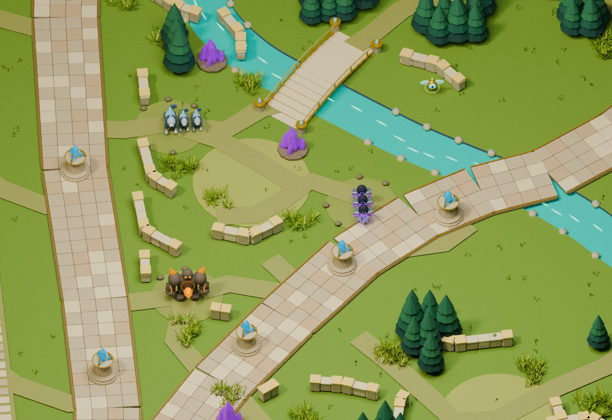
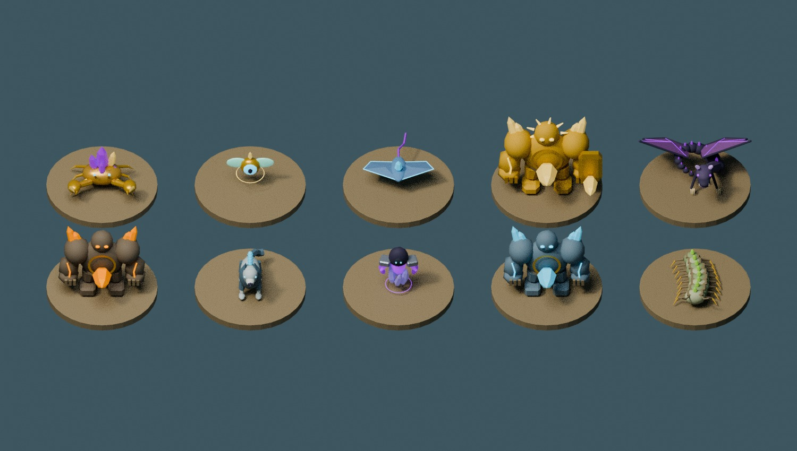

✧
Долина пробуждается
Загружаем 3D-сцену…
Загружаем 3D-сцену…
Рендеры Blender Cycles из исходников, включённых в Unity-проект. Это не скриншоты Unity.
01 / Общий вид долины ↗
02 / Лес и древняя архитектура ↗
03 / Нейтральные существа и боссы ↗